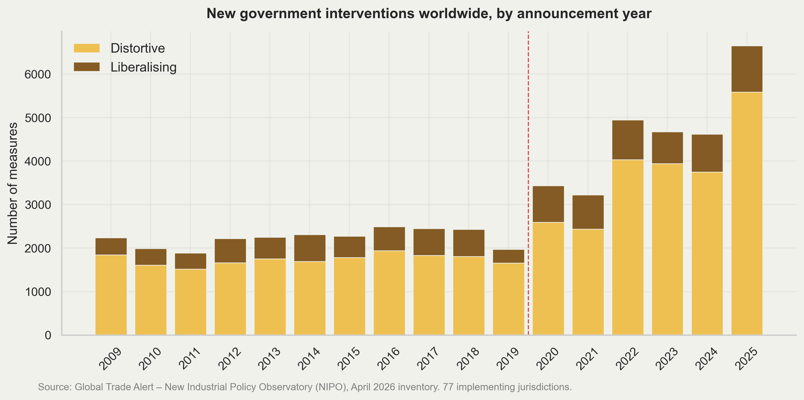
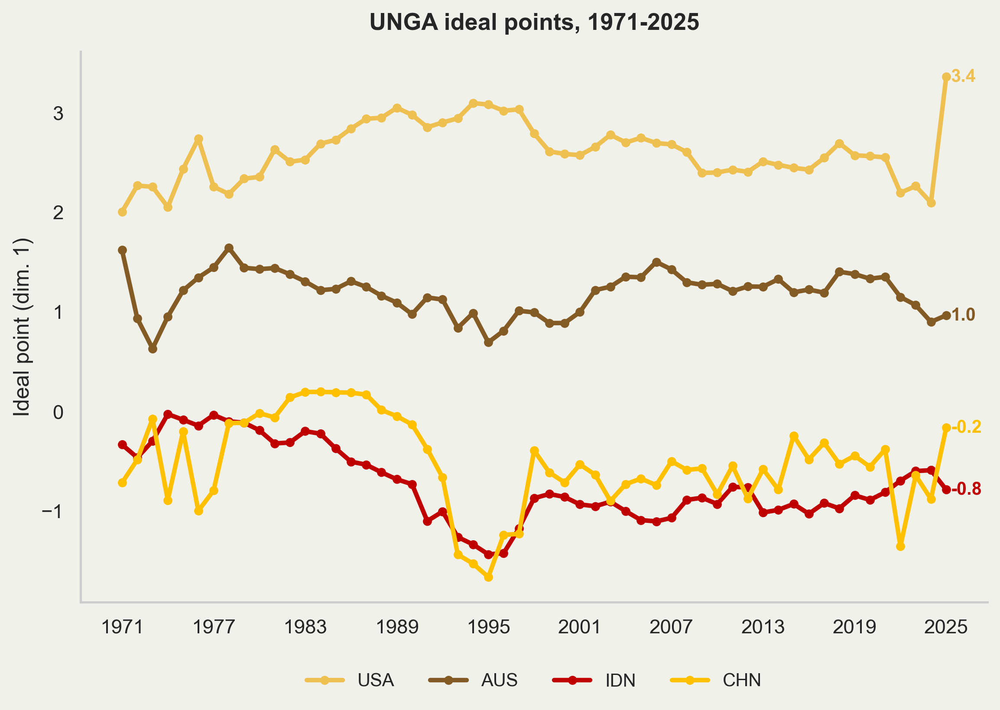

Geoeconomics
KIPI 2026: Plenary 1, University of Sydney
July 13, 2026
Who am I
Economist at National Economic Council of Indonesia.
Lecturer at Universitas Indonesia.
PhD in Economics, Australian National University.
Edited a book and co-wrote a chapter in PPID.
tag me at
@imedkrisnaor read krisna.or.id.
What we will talk about
Recent developments in geoeconomics: risk is up, governments are busy.
The “geo” part: sanctions and the pull toward trade blocs.
Indonesia \(\times\) Australia: a fertilizer story, and what we can build on.
Conclusion.
Geopolitical risk is rising

Since 2022 it averages ~1.5\(\times\) its 2010s level. The spikes now arrive in clusters: Ukraine, Gaza, Hormuz.
Governments are responding: intervention is back

NIPO GTA: ~4,600 measures/year in 2020–25 vs ~2,200 in 2010–19, a 2.1\(\times\) jump, and 81% of the post-2020 wave is trade-distortive.
What’s targeted, and why

Interventions concentrate in dual-use (70%), advanced technology (46%), low-carbon (39%), medical (35%) and critical-minerals (23%) products.
Stated motives are led by national security (24%) and supply-chain resilience (14%): geopolitics, not classic market failure.
Moving towards blocs
US sanctions and export controls: reserve freezes and SWIFT cut-offs (Russia, 2022), advanced-chip and equipment controls (China, 2022).
Secondary sanctions force third countries to choose a compliance regime: with whom you can bank, ship, insure, and share technology.
Add the 2025 tariff wall, and the trading system starts to partition into a US-centered and a China-centered sphere.
Case in points: US ART Poison Pill.
Is this visible in the trade data yet? Yes.
Trade is reorganizing along geopolitical lines
Gopinath, Gourinchas, Presbitero & Topalova (JIE 2025), gravity estimates on granular bilateral data:
Since the war in Ukraine, trade between the US- and China-centered blocs is ~11% lower, and FDI ~12% lower, than flows within the same bloc.
During the Cold War, between-bloc trade fell by two-thirds relative to within-bloc. There is a lot of room for this to get worse.
The big difference from the Cold War: nonaligned “connector” countries show no relative decline; they are bridging the blocs and gaining importance.
Indonesia and Australia both trade heavily across the divide. Connector status is our opportunity.
Indonesia \(\times\) Australia: the fertilizer story
The early-2026 Strait of Hormuz crisis reminded everyone what chokepoint risk means: ~1/5 of globally traded oil transits Hormuz.
Australia imported 63% of its urea (US$1.02bn of US$1.62bn) through Hormuz. Indonesia moves ~80% of its refined-fuel imports through Malacca.
22 June 2026: MV Medi Luna berthed in Brisbane with 47,250 tonnes of urea from PT Pupuk Indonesia, the Prabowo–Albanese G2G deal under IA-CEPA, on a Hormuz-free route.
Indonesia’s urea capacity is 7.8 Mt vs 6.3 Mt domestic use, an exportable surplus; initial target 250,000 t by end-2026.
Blocs by UNGA voting

Bailey, Strezhnev & Voeten 2017 use UNGA vote to create “ideal point”. AUS (1.0) and IDN (−0.8) are different, but the gap is narrowing while US diverge from the rest of the world.
What already works
| Flow | Product | Value | Market share |
|---|---|---|---|
| IDN → AUS | Aluminium oxide | US$206 mn | 99.8% |
| IDN → AUS | Coke / semi-coke | US$93 mn | 79% |
| IDN → AUS | Cocoa butter | US$96 mn | 33% |
| AUS → IDN | Coking coal | US$1.11 bn | 42% |
| AUS → IDN | Iron ore | US$901 mn | 70% |
| AUS → IDN | Frozen beef | US$246 mn | 32% |
Good complementarity, Yet Indonesia supplies only 1.4% of Australia’s US$309 bn imports.
Where the potential is
Urea: US$135 mn today, 8.5% market share, US$709 mn export capacity. MV Medi Luna is the proof of concept; scale it.
Herbicides: 6.5% share while China holds 63.5%: a diversification play Australia wants.
Telecom equipment: 2.9% share against US$1.69 bn Indonesian capacity, as Australia de-risks from Chinese suppliers.
Coffee: US$16 mn of a US$2.5 bn export capacity; garments: 3.7% of Australia’s US$7.8 bn market.
Indonesian nickel + Australian lithium in one battery value chain.
The frameworks exist: IA-CEPA, RCEP, the 2024 treaty architecture. The gap is implementation, not agreements.
Beyond goods: subsea cable, hyperscalers, trade in services.
Conclusion
Geopolitical risk is elevated and governments everywhere are intervening twice as much as in the 2010s, for security reasons.
Trade is beginning to fragment along bloc lines, but Indonesia and Australia are natural connectors, not bloc members.
The fertilizer trade shows how we can map chokepoint exposure, match it to a partner’s surplus capacity, use the agreements we already signed.
Geoeconomics presents a risk, but also create an opportunity. It is a demand shock to answer. Asia-Pacific could create a new, Hormuz-free tradeflow.
References
Bailey, M., A. Strezhnev & E. Voeten. 2017. Estimating dynamic state preferences from United Nations voting data. Journal of Conflict Resolution 61(2).
Caldara, D. & M. Iacoviello. 2022. Measuring geopolitical risk. American Economic Review 112(4). Data: matteoiacoviello.com/gpr.htm.
Dewan Ekonomi Nasional. 2026. Geoeconomics and Bilateral Resilience: Indonesia–Australia Trade Complementarity, Strategic Supply Chains, and Cooperation Architecture. Policy Note (draft).
Evenett, S., A. Jakubik, F. Martín & M. Ruta. 2024. The return of industrial policy in data. The World Economy 47(7).
Global Trade Alert. 2026. New Industrial Policy Observatory (NIPO), April 2026 inventory.
Gopinath, G., P.-O. Gourinchas, A. F. Presbitero & P. Topalova. 2025. Changing global linkages: A new Cold War? Journal of International Economics 153.
Juhász, R., N. Lane & D. Rodrik. 2024. The new economics of industrial policy. Annual Review of Economics 16.
UN Comtrade. 2025. Bilateral trade at HS 6-digit level.